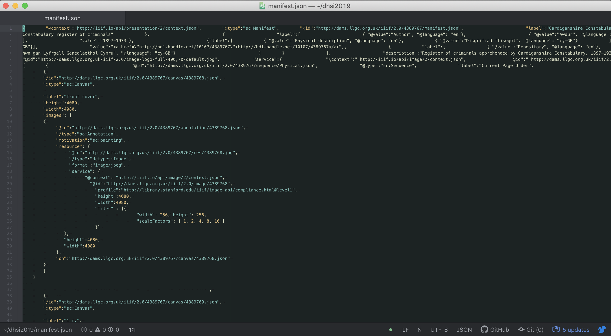
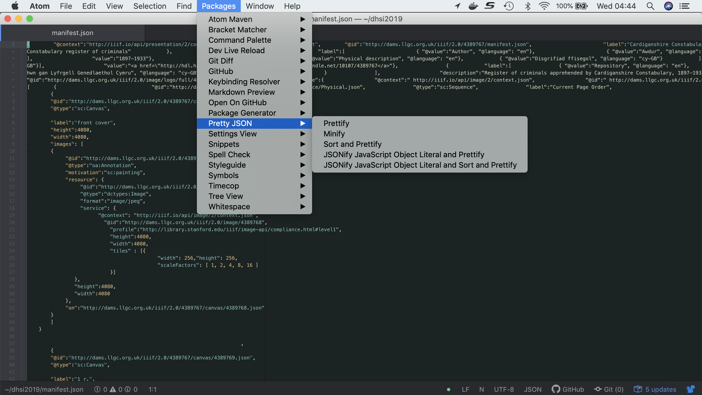
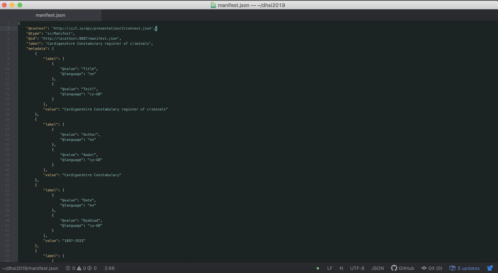
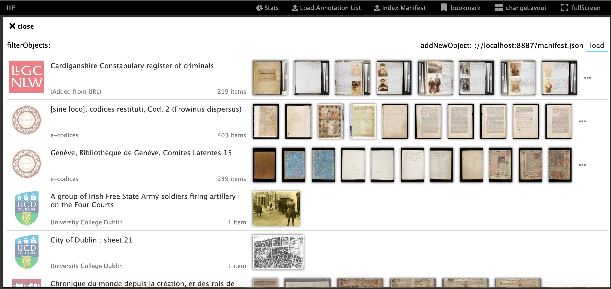
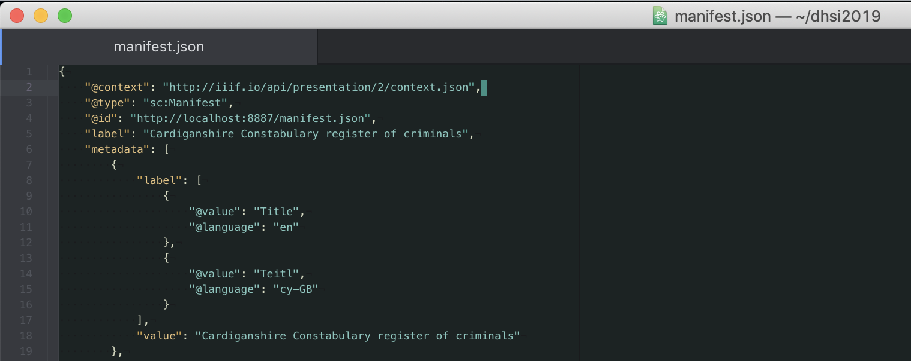
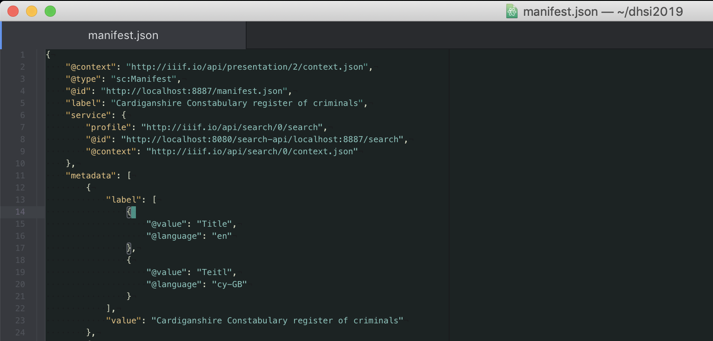

Installing an Annotation Server
We are now going to attempt to install an Annotation Server locally. For this you will need:
- The Chrome Web server you setup as part of the Presentation API. This should be running on port
8887and the directory should bedhsi2019. - Atom open ready for editing a manifest
A command line open and
cdinto thedhsi2019directory. Remember the following commands:cd- Change directoryls- list directorypwd- to show you where you are (Print Working Directory)
Step 1:
- Download the SimpleAnnotationServer release: https://github.com/glenrobson/SimpleAnnotationServer/releases. Download sas.zip

Step 2:
Extract the zip file into your
dhsi2019. On windows make sure it is extracted by right click on the file and uncompressing.Step 3:
- In your terminal window
cdinto the sas directory which should have been created in the last step.
Glens-MacBook-Pro:tmp gmr$ cd sas
Glens-MacBook-Pro:sas gmr$ ls
2019_06_05.request.log generated-sources maven-status surefire-reports
classes generated-test-sources simpleAnnotationStore test-classes
dependency maven-archiver simpleAnnotationStore.war work
Step 4:
- Run the SimpleAnnotationStore:
java -jar dependency/jetty-runner.jar simpleAnnotationStore.war
Step 5:
- Navigate to http://localhost:8080/index.html
- And you should see Mirador
Navigate to an item and make an annotation. Does it save? If not ask for help
Step 6:
- We are now going to download a manifest and make it aviliable through the Chrome Web Server.
- Download the following manifest: https://damsssl.llgc.org.uk/iiif/2.0/4389767/manifest.json
- Save it into your
dhsi2019directory - Now open up this file in Atom

- You may need to format the JSON. To do this go to the
Packagesmenu thenPretty Json, thenPrettify

- Now Change the
@idfromhttp://dams.llgc.org.uk/iiif/2.0/4389767/manifest.jsontohttp://localhost:8887/manifest.json

Now click save. Double check you can access the manifest at: http://localhost:8887/manifest.json
Step 7:
- Now switch back to Mirador and add this manifest
- Go to http://localhost:8080/index.html
- Go to the list of manifests (click the big plus sign or if you are viewing a manifest click the four boxes at the top left and select 'newObject').
- In the list of manifests paste the link to your manifest http://localhost:8887/manifest.json into the addNewObject text field and click
load.
- Now switch back to Mirador and add this manifest
- You should now see:

Step 8:
Add some annotations to this manifest.
Step 9:
- We are now going to index the manifest and add a search API.
- Navigate to: http://localhost:8080/uploadManifest.html
- Upload your manifest (http://localhost:8887/manifest.json)
- If this was succesfull you should see the following page:

- Copy the URL in the search bar so you can use it later. In my example above this would be
http://localhost:8080/search-api/localhost:8887/search - Now open up the Manifest in Atom and it should look like this:

- Now add the following JSON to the manifest after the
label:
"service": {
"profile": "http://iiif.io/api/search/0/search",
"@id": "SEARCH_ID",
"@context": "http://iiif.io/api/search/0/context.json"
},
- Now replace the SEARCH_ID with the URL you copied earlier. In my example it would look like:

Step 10:
- Test your manifest with the Universal Viewer to see if has worked.
- Open up http://universalviewer.io/
- and paste your manifest http://localhost:8887/manifest.json in the View a IIIF Manifest section
- Does it show a search box?
- Has it found an annotation? Note the search is case sensetive.
Extras:
- Loading a Newspaper example with OCR
- Download annotations
- If you get here you can go back to day one and do the Github Pages level0 tutorial.